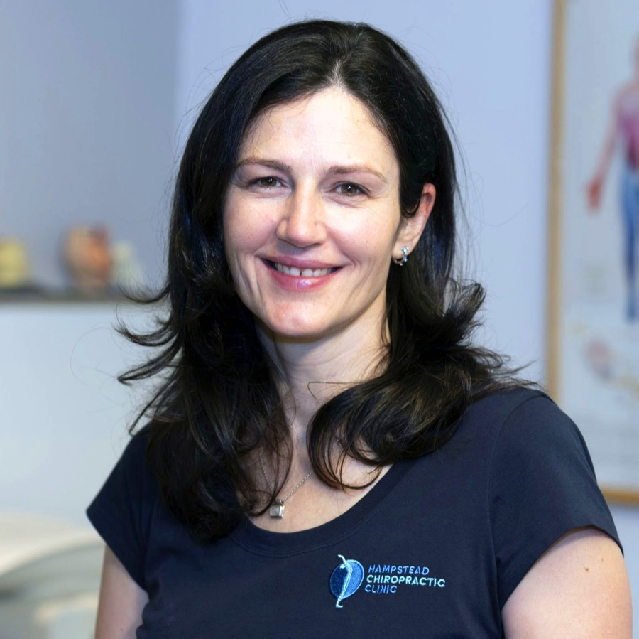
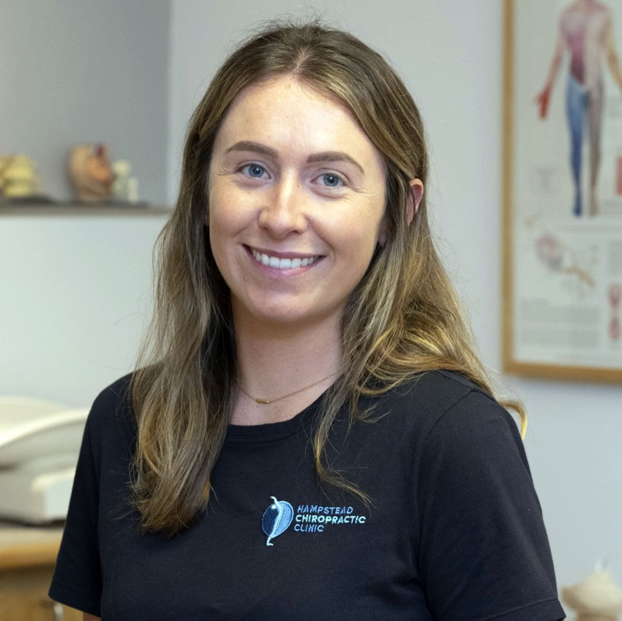

Clinic Director
Nina van Dyk
BSc(Hons) MChiro DC MSc ACPP
Nina van Dyk is an experienced chiropractor with a Master's Degree in Chiropractic and a Post-Graduate Master's in Advanced Chiropractic Paediatrics — one of only a handful of chiropractors in the UK with this qualification. She treats patients of all ages, from newborns to adults, and supports expectant mothers for a more comfortable pregnancy and delivery.
Passionate about helping people heal naturally, Nina has expertise in conditions ranging from back, neck and joint pain to headaches, using techniques including Diversified, Gonstead, Thompson, Myofascial Release and Acupuncture. She also trained to care for horses, improving their performance, posture and behaviour.
Nina's approach combines expert chiropractic care with rehabilitation exercises, helping the body unlock its natural healing potential. Her current clinic bio lists membership of the General Chiropractic Council and United Chiropractic Association.

Chiropractor
Samantha Allen
MSc, DC
Dr Samantha Allen graduated from the Welsh Institute of Chiropractic with a Master's in Chiropractic. Growing up with an athletic background, she experienced first-hand the difference chiropractic care can make.
Samantha believes chiropractic isn't just about relieving pain — it's about restoring function and addressing the root cause of problems to improve everyday life. She creates individualised treatment plans, incorporating home exercises to reduce the risk of recurrence, with prevention as a key part of care.
Her treatment style combines diversified manipulation, soft tissue techniques and dry needling. Samantha is registered with the General Chiropractic Council and is a member of the British Chiropractic Association.
Chiropractor
Georgios Barmpouris
MChiro LRCC DC
Dr Georgios Barmpouris graduated with a Master's degree in Chiropractic from the Welsh Institute of Chiropractic and went on to complete a Postgraduate Licentiate training year with the General Chiropractic Council. Since then, he has continued to grow his expertise through further training, mentorship and hands-on experience in busy clinics.
Georgios has a special passion for helping babies, children and families, as well as people suffering with headaches and migraines. In practice, he uses a variety of techniques — including the Activator Protocol, Diversified adjustments, Myofascial Release and Medical Dry Needling — to create a care plan that suits each patient. His approach is gentle, precise and patient-centred.
Outside the clinic, Georgios brings his energy and enthusiasm to everything he does — a former professional basketball player, he now enjoys Brazilian Jiu-Jitsu and weight training, and carries the same warm, approachable spirit into his work.
Ready to meet the team in person?
Call our reception team and we'll match you with the right chiropractor for your needs.